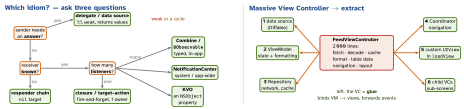

design · folio
In one line: Cocoa gives you a small set of communication idioms — delegate, data source, target–action, closure, NotificationCenter, KVO, responder chain — and choosing one is a question of how many listeners, whether the sender needs an answer, and who owns whom. Most iOS anti-patterns are one mistake: responsibilities and dependencies that nobody can see.
Download PDF Print view LaTeX source


The idioms
| Idiom | Shape | Mechanism · rule |
|---|---|---|
| Delegate | 1:1 | protocol : AnyObject, weak var delegate; can answer
(shouldSelect), did/will/should names, sender first |
| Data source | 1:1 | delegate that supplies data (numberOfRows); UIKit holds
both weak |
| Target–action | 1:N | addTarget(_:action:for:) + @objc selector; the control
does not retain the target; UIAction closure (iOS 14) |
| Closure | 1:1 | onSelect: (Item) -> Void; stored → [weak self]; best
for one event |
| NotificationCenter | 1:N | broadcast by name, untyped userInfo;
synchronous, on the posting thread |
| KVO | 1:N | observe(\.x, options:) →
NSKeyValueObservation; needs NSObject + @objc dynamic |
| Responder chain | 1:? | sendAction(_:to: nil, …): first responder up via
next (see gof-behavioural) |
Combine / @Observable | 1:N | typed streams / per-property tracking (iOS 17); the modern default in-app |
protocol PickerDelegate: AnyObject { // so it can be weak
func picker(_ p: Picker, didPick item: String)
func pickerShouldClose(_ p: Picker) -> Bool // answer back
}
final class Picker {
weak var delegate: PickerDelegate? // Picker never owns it
func pick(_ item: String) {
delegate?.picker(self, didPick: item)
if delegate?.pickerShouldClose(self) ?? true { /* close */ }
}
}
// load(true, false) -- what? Name the choice instead:
enum CachePolicy { case useCache, reload }
func load(_ policy: CachePolicy) {} // load(.reload)Massive VC — the recipe
Characterisation/snapshot tests first, then steps 1–6 as drawn, one safe move at a time (child VCs: addChild + didMove(toParent:)). It is an SRP problem, not an MVC one — moving the mass into the model or a Manager only relocates it.
Traps
- “Singletons are always bad” — no (
FileManager.default). The damage is hidden lookup (.sharedinside logic) + global mutable state: keep one instance, inject it. - A service locator still hides dependencies — a missing registration fails at run time, not compile time (Mark Seemann).
- NotificationCenter for a 1:1 flow = invisible coupling: no contract, no “who listens?”.
- “Duplication is far cheaper than the wrong abstraction” (Sandi Metz).
UIAction/sink/timer closures are stored:[weak self];unownedonly when the lifetime is guaranteed.
Remember
Answer back → delegate · one → closure · many → Combine/Notification · unknown → responder chain. Make responsibilities and dependencies visible.
| Anti-pattern | Symptom | Damage | Fix |
|---|---|---|---|
| Massive VC | 1 000+ lines, everything in viewDidLoad | untestable, merge conflicts | the recipe above; VC becomes glue |
| God object | AppManager, Utils; everyone imports it | every change ripples | split by responsibility; inject small collaborators |
| Singleton / locator | .shared / resolve() inside logic | hidden deps, order-dependent tests | init injection; .shared only at the composition root |
| Stringly-typed | segue ids, userInfo["k"], [String: Any] | typos crash at run time | enums, Notification.Name constants, Codable |
| Boolean flags | load(true, false) | unreadable calls, 2n branches | two functions,
an enum, or an OptionSet |
| Deep inheritance | BaseViewController with 30 hooks | fragile base class, LSP breaks | protocols + extensions, composition, child VCs |
| Copy-paste reuse | the same fix needed in 5 places | shotgun surgery, drift | extract once it repeats 3× |
| Premature abstraction | a protocol with one conformer | indirection, harder to read | YAGNI; abstract at the 2nd–3rd case (a test seam counts) |
| Callback pyramid | nested completions; a path never calls back | lost errors, hangs | async/await, structured concurrency |
| UIKit in models | UIColor/UIImage in domain types | no widget/test reuse, main-thread ties | Foundation-only domain; map in the ViewModel |
| Over-modularization | 60 modules, one file each | build graph + API churn cost | module by feature/team, measure build times |